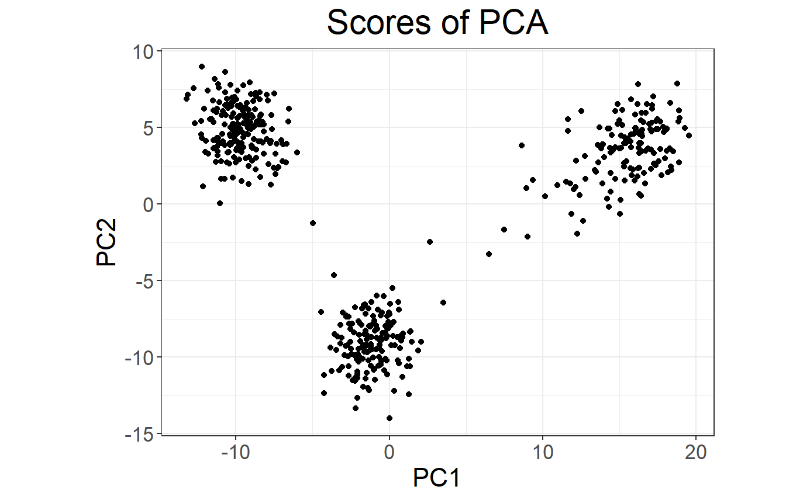

Demonstration of packages bigsnpr and bigstatsr
Florian Privé
June 28, 2018
demo.RmdGet genotype file
# Get the example bedfile from package bigsnpr
bedfile <- system.file("extdata", "example.bed", package = "bigsnpr")Read from the PLINK files
# Load packages bigsnpr and bigstatsr
library(bigsnpr)## Loading required package: bigstatsr# Read from bed/bim/fam, it will create new files.
# Let's put them in an temporary directory for this demo.
tmpfile <- tempfile()
snp_readBed(bedfile, backingfile = tmpfile)## [1] "/tmp/RtmpaKxHIE/file42b4d6b98fc.rds"# Attach the "bigSNP" object in R session
obj.bigSNP <- snp_attach(paste0(tmpfile, ".rds"))
# See how it looks like
str(obj.bigSNP, max.level = 2, strict.width = "cut")## List of 3
## $ genotypes:Reference class 'FBM.code256' [package "bigstatsr"..
## ..and 24 methods, of which 10 are possibly relevant:
## .. add_columns, as.FBM, bm, bm.desc, copy#envRefClass,
## .. initialize, initialize#FBM, save, show#envRefClass,
## .. show#FBM
## $ fam :'data.frame': 517 obs. of 6 variables:
## ..$ family.ID : chr [1:517] "POP1" "POP1" "POP1" "POP1" ...
## ..$ sample.ID : chr [1:517] "IND0" "IND1" "IND2" "IND3" ...
## ..$ paternal.ID: int [1:517] 0 0 0 0 0 0 0 0 0 0 ...
## ..$ maternal.ID: int [1:517] 0 0 0 0 0 0 0 0 0 0 ...
## ..$ sex : int [1:517] 0 0 0 0 0 0 0 0 0 0 ...
## ..$ affection : int [1:517] 1 1 2 1 1 1 1 1 1 1 ...
## $ map :'data.frame': 4542 obs. of 6 variables:
## ..$ chromosome : int [1:4542] 1 1 1 1 1 1 1 1 1 1 ...
## ..$ marker.ID : chr [1:4542] "SNP0" "SNP1" "SNP2" "SNP3" ...
## ..$ genetic.dist: int [1:4542] 0 0 0 0 0 0 0 0 0 0 ...
## ..$ physical.pos: int [1:4542] 112 1098 2089 3107 4091 5091 6..
## ..$ allele1 : chr [1:4542] "A" "T" "T" "T" ...
## ..$ allele2 : chr [1:4542] "T" "A" "A" "A" ...
## - attr(*, "class")= chr "bigSNP"# Get aliases for useful slots
G <- obj.bigSNP$genotypes
CHR <- obj.bigSNP$map$chromosome
POS <- obj.bigSNP$map$physical.pos
# Check some counts for the 10 first SNPs
big_counts(G, ind.col = 1:10)## [,1] [,2] [,3] [,4] [,5] [,6] [,7] [,8] [,9] [,10]
## 0 226 325 309 346 158 215 395 134 143 159
## 1 228 171 171 151 246 236 112 269 250 235
## 2 63 21 37 20 113 66 10 114 124 123
## <NA> 0 0 0 0 0 0 0 0 0 0Principal Component Analysis
# Half of the cores you have on your computer
NCORES <- nb_cores()
# Exclude Long-Range Linkage Disequilibrium Regions of the human genome
# based on an online table.
ind.excl <- snp_indLRLDR(infos.chr = CHR, infos.pos = POS)
# Use clumping (on the MAF) to keep SNPs weakly correlated with each other.
# See https://privefl.github.io/bigsnpr/articles/pruning-vs-clumping.html
# to know why I prefer using clumping than standard pruning.
ind.keep <- snp_clumping(G, infos.chr = CHR,
exclude = ind.excl,
ncores = NCORES)
# Get the first 10 PCs, corresponding to pruned SNPs
obj.svd <- big_randomSVD(G, fun.scaling = snp_scaleBinom(),
ind.col = ind.keep,
ncores = NCORES)
# As `obj.svd` has a class and a method `plot`.
# Scree plot by default
plot(obj.svd)
# Score (PCs) plot
plot(obj.svd, type = "scores")
# As plot returns an ggplot2 object, you can easily modify it.
# For example, you can add colors based on the population.
library(ggplot2)
plot(obj.svd, type = "scores") +
aes(color = pop <- rep(c("POP1", "POP2", "POP3"), c(143, 167, 207))) +
labs(color = "Population")
Genome-Wide Association Study
# Fit a logistic model between the phenotype and each SNP separately
# while adding PCs as covariates to each model
y01 <- obj.bigSNP$fam$affection - 1
obj.gwas <- big_univLogReg(G, y01.train = y01,
covar.train = obj.svd$u,
ncores = NCORES)
# Q-Q plot of the object
snp_qq(obj.gwas)
# You can easily apply genomic control to this object
obj.gwas.gc <- snp_gc(obj.gwas)
# Redo the Q-Q plot
snp_qq(obj.gwas.gc)
# Manhattan plot, not quite sexy because there are only 1 chromosome here
snp_manhattan(obj.gwas.gc, infos.chr = CHR, infos.pos = POS)
Joint PRS
# Divide the indices in training/test sets
ind.train <- sample(nrow(G), 400)
ind.test <- setdiff(rows_along(G), ind.train)
# Train the model
cmsa.logit <- big_spLogReg(X = G, y01.train = y01[ind.train],
ind.train = ind.train,
covar.train = obj.svd$u[ind.train, ],
alphas = c(1, 0.5, 0.05, 0.001),
ncores = NCORES)
# Get predictions for the test set
preds <- predict(cmsa.logit, X = G, ind.row = ind.test,
covar.row = obj.svd$u[ind.test, ])
# Check AUC
AUC(preds, y01[ind.test])## [1] 0.8449931